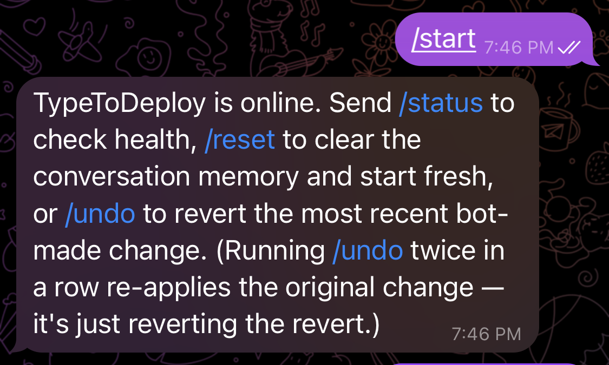
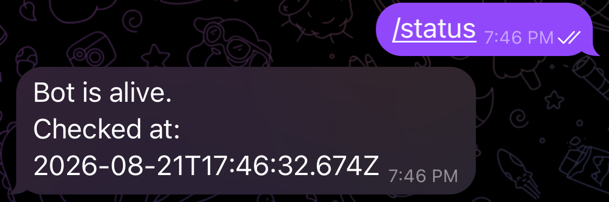
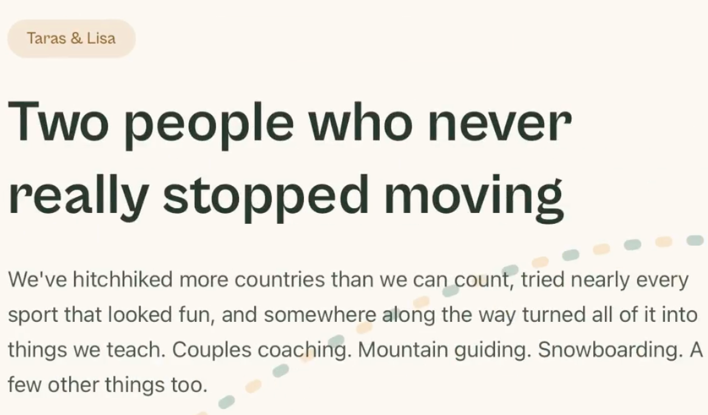
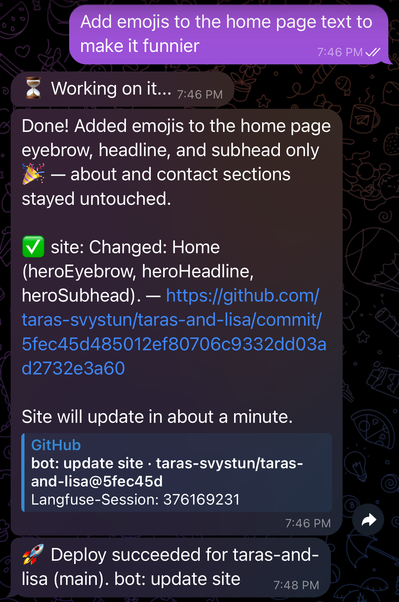
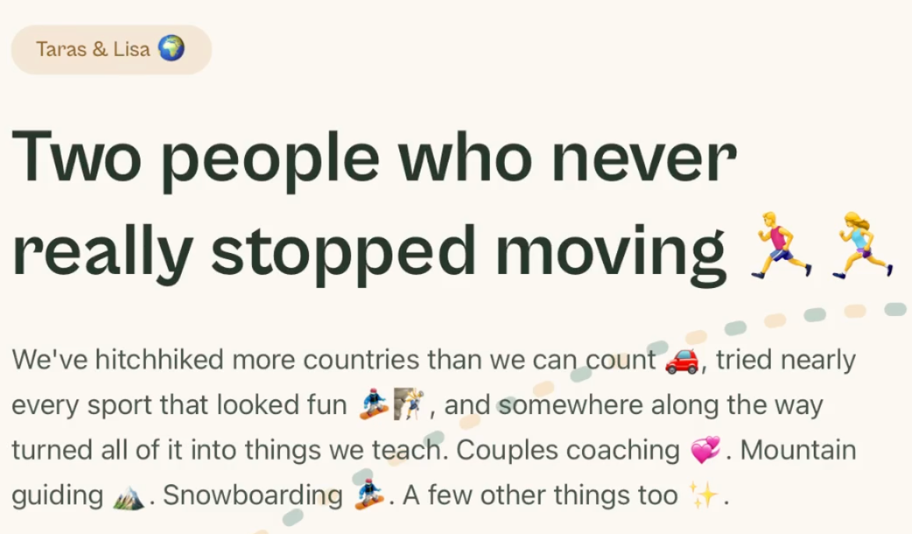

A message sent in a conversation, the change verified, the site updated — recorded from start to finish.
Real recording, unedited result: the conversation on the left, the site on the right. The video is sped up; in real conditions the update goes live in about a minute.
A second run of the same journey, in screenshots. It reads without sound and without the video.

TypeToDeploy reports that it is online and lists its commands: /status for service health, /reset to clear the conversation memory, /undo to revert the last change.

The bot confirms it is running and gives the time of the check.
The person checks the service herself, without asking anyone.

The live home page of taras-and-lisa.com.
The headline and the intro paragraph contain no emoji.

The agent changes three home-page fields — heroEyebrow, heroHeadline, heroSubhead — writes a commit, then reports the deployment once the site is rebuilt.
commit 5fec45d · taras-svystun/taras-and-lisa

The same page, reloaded after publishing.
The emojis are in the headline and the intro paragraph. What was typed in the conversation is visible on the public site.
The bot finds its last change, reverts site/src/data/site.json, writes the revert commit and confirms the deployment.
commit 6d81bdd · taras-svystun/taras-and-lisa
The home page after the undo.
The emojis are gone. The content matches step 03.
What the system cannot do yet, as of this recording.
The agent edits structured content. It does not change site structure or layout.
The tool works on a site built for it. Connecting an existing site is not possible yet.
One person uses the tool today, on one production site.
The rest of the project — what is built, what still needs validating — is on the home page.
Back to home